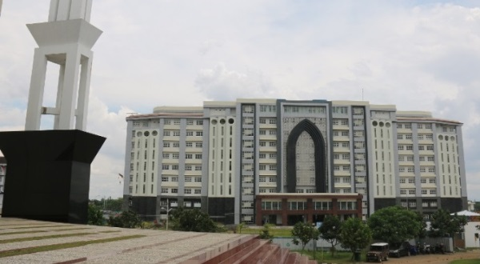
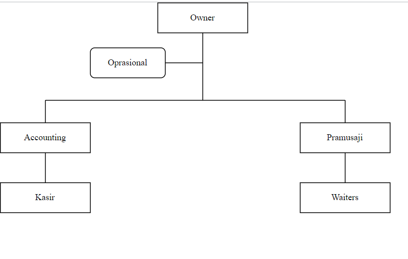
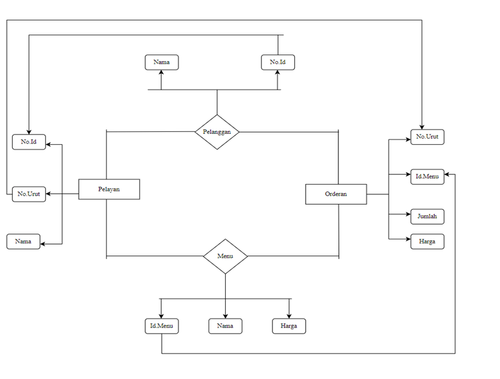

Cantika Juandy Putri Katiandagho-20000016146
- Getting Started
- HOME
- Proses Bisnis
- About
- Analisis Permasalahan
Getting Started
Proses Bisnis
- Proses Bisnis
- 
- Alur Proses Bisnis
- 
A. Proses Bisnis Utama
Waroeng Makan The Cumlaude merupakan sebuah warung makan dimana konsep yang diterapkan pada The Cumlaude sendiri ini sangat modern atau mengikuti perkembangan zaman. Waroeng Makan The Cumlaude ini beralamat di Jl. Tritunggal No.2, Sorosutan, Kec. Umbulharjo, Kota Yogyakarta.
Waroeng Makan The Cumlaude ini memiliki jam operasi 18.00-23.59, The Cumlaude sendiri memiliki seorang pemilik yang bernama Bapak Buqorih. Pada Waroeng Makan The Cumlaude ini sendiri memili sebuah proses bisnis utama yaitu:
- Jual beli makanan dan minuman
Pada proses bisnis pada Waroeng The Cumlaude ini terdapat pelanggan yang melakukan pemesanan dan organisasi sebagai penyedia product.
B. Proses Bisnis Pendukung
Waroeng Makan The Cumlaude memiliki proses bisnis pendukung yang berjalan untuk mendukung kegiatan atau proses bisnis utama agar dapat berjalan, Proses bisnis pendukung yang berjalan adalah sebagai berikut :
- Sarana dan prasarana
Pada proses bisnis ini terdapat sistem pendukung pada kafe dimana nanti akan menjadi bagian penting dalam proses bisnis utama yaitu tempat dan alat.
- Manajement SDM
Merupakan sebuah proses bisnis pendukung dimana terdapat sebuah Manajemen SDM yang mengelola berjalannya proses bisnis utama agar nanti dapat berjalan dengan baik, dan menjadi bagian penting dari proses bisnis yang akan dijalani. Didalamnya terdapat beberapa peran, yaitu :
a. Pramusaji
Pramusaji merupakan orang yang bertugas atau bekerja di bidang penyajian makanan dan minuman. Pramusaji bertugas membuat pesanan pelanggan yang telah dicatat oleh bagian waiters, dan kemudian pesananan yang sudah selesai akan diberikan ke pelanggan melalui pramusaji.
b. Waiters
Waiters adalah seseorang yang bekerja untuk melayani para tamu yang datang ke restoran atau kafe mulai saat pertama datang, sampai dengan tamu tersebut selesai makan. Waiters sendiri bertugas menerima dan mencatat pesanan dari pelanggan, mencatat keuangan dan memberikan daftar pesanan kepada Pramusaji.
- Keuangan
Pada bagian keuangan SDM (Waiters) yang bertugas mencatat pemesanan pelangan dan mencatat keuangan yang ada. Dengan adanya keuangan pelanggan dapat melihat daftar menu dan harga product, serta akan mendapatkan struk bayar.
- Promosi
Selanjutnya adalah Promosi, dimana hal ini dilakukan untuk mencapai target pelanggan yang diinginkan. Nantinya akan terdapat alamat dari Waroeng The Cumlaude.
• Alamat : Jl. Tritunggal No.2, Sorosutan, Kec. Umbulharjo, Kota Yogyakarta, Daerah Istimewa Yogyakarta 55162
• Link maps : https://goo.gl/maps/xhdQCrAUCpUvDxDV6
p>
Gambar Proses Bisnis Waroeng The Cumlaude
About
Proses bisnis adalah sekumpulan aktivitas mewujudkan tujuan bisnis mulai dari input, kemudian menambahkan nilai (value) untuk mendapatkan output berupa hasil yang diinginkan konsumen, dengan definisi yang jelas tentang awal proses, akhir proses, input dan output. Sekumpulan rantai aktivitas untuk menghasilkan produk barang ataupun jasa dari awal proses masuknya input, kemudian proses sampai keluar output, dan di setiap mata rantai aktivitas terdapat penambahan nilai disebut rantai nilai (value chain). Proses bisnis merupakan gambaran detail dari rantai nilai. Suatu proses bisnis dapat dipecah menjadi beberapa subproses dengan atributnya sendiri yang berkontribusi mencapai tujuan dari superprosesnya. Di dalam rantai nilai terdapat aktivitas utama yang merupakan aktivitas yang berkaitan langsung dengan produksi, dan aktivitas pendukung. Organisasi bisnis berupaya melakukan perbaikan proses bisnis untuk meningkatkan efisiensi prosesnya. Upaya perbaikannya membutuhkan suatu metode dan model yang mampu menggambarkannya dengan baik, sehingga dapat dilakukan penilaian atas proses yang sedang berjalan. Proses bisnis perusahaan dapat menjadi sumber kompetitif jika dapat memungkinkan perusahaan untuk berinovasi atau untuk menjalankannya dengan lebih baik dari pesaingnya.
Analisis Permasalahan

Analsis Permasalahan yang berada pada Waroeng The Cumlaude